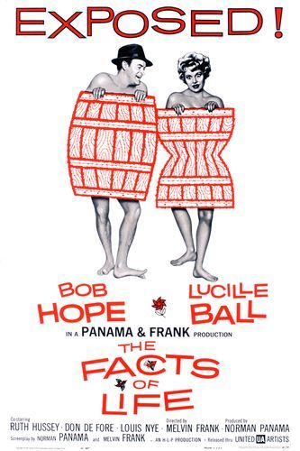

The Facts of Life
33rd Academy Awards
(Oscars 1961)
5 Nominations, 1 Award
| Nominations | ||
|---|---|---|
| Category | Nominees | Result |
| Writing (Story and Screenplay--written directly for the screen) | Melvin Frank and Norman Panama | Nominated |
| Cinematography (Black-and-White) | Charles B. Lang, Jr. | Nominated |
| Art Direction (Black-and-White) | Joseph McMillan Johnson, Kenneth A. Reid, and Ross Dowd | Nominated |
| Costume Design (Black-and-White) | Edith Head and Edward Stevenson | Won |
| Music (Song) "The Facts Of Life" |
Johnny Mercer | Nominated |